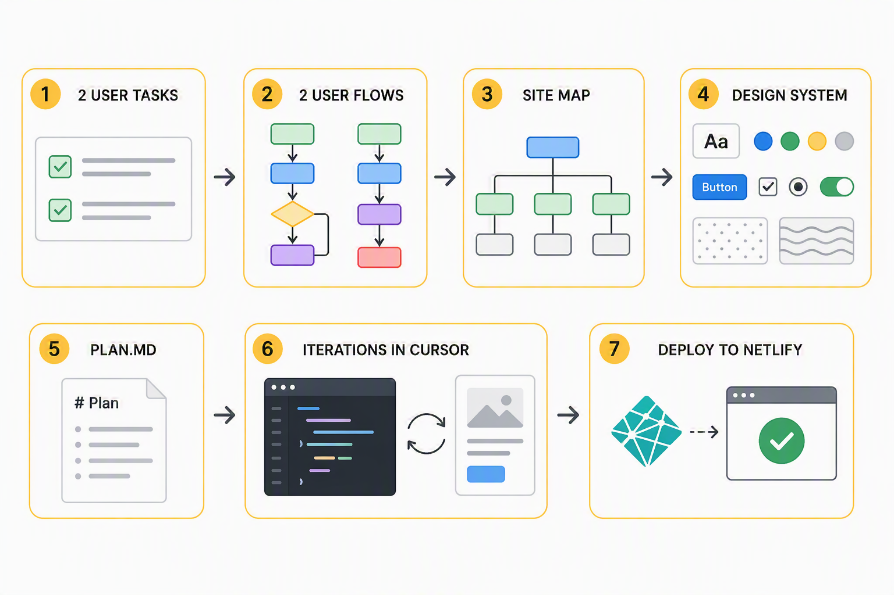
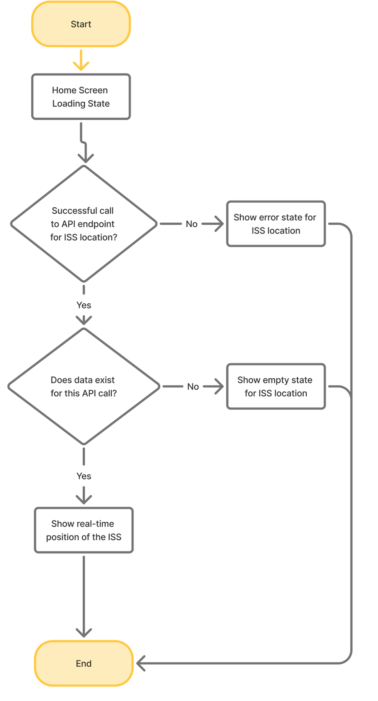
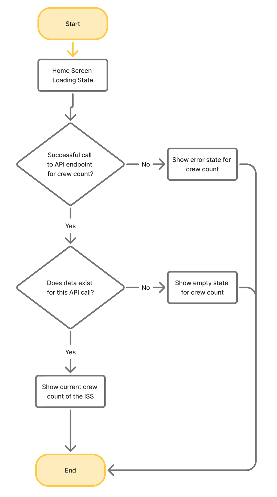
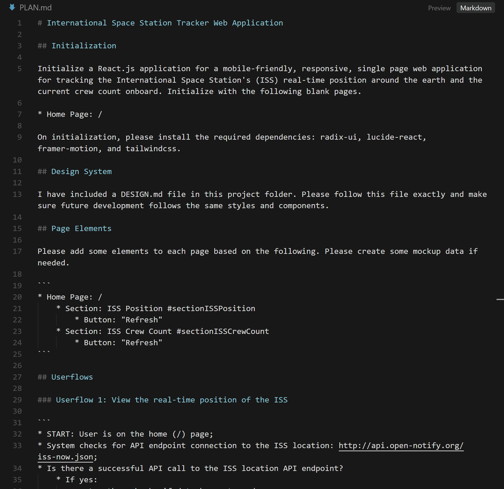
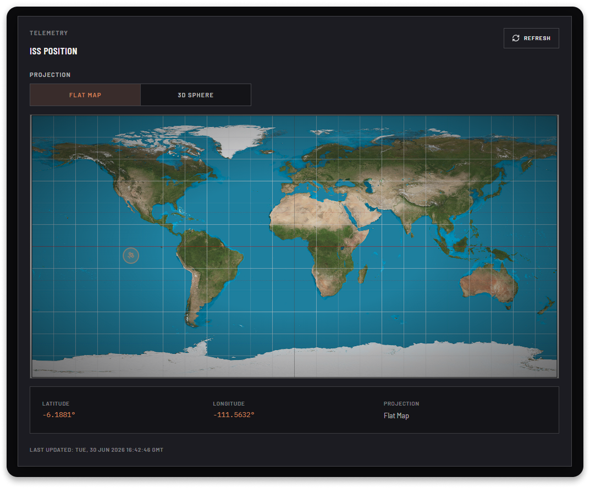
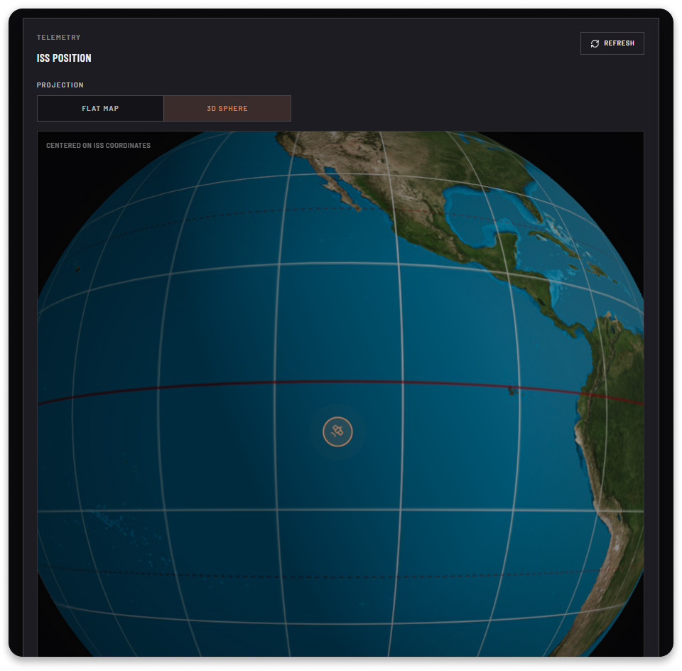
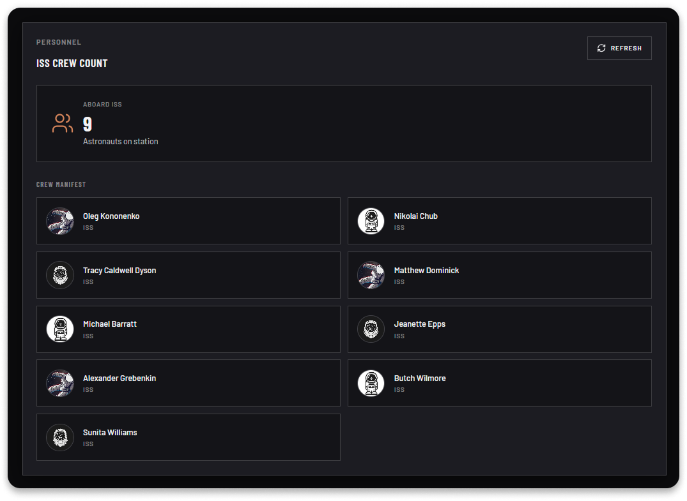

This project is a responsive single page web application for tracking the International Space Station's (ISS) real-time position around the earth and the current crew count onboard. Users can view where the ISS is currently located over the earth's surface and can view this information in a 3D globe format or in a 2D flat map.
In addition, users can view how many astronauts and the names of the astronauts currently onboard the ISS.
The real-time position and crew information from the ISS is collected and updated from the Open Notify public API (http://api.open-notify.org/iss-now.json). The application continuously fetches this information from the API to ensure up-to-date information. A design system inspired by Space X's website was also created for this application using skills created with Cursor.
Challenge
Problem
For people interested in the International Space Station and those onboard, updates are often limited to social media postings, press releases, or news articles. This application allows users to view the flight path of the ISS, its location over the earth, and the astronauts onboard, allowing them a closer look into the movements of the world's longest running space station.
Process
Process

First, two necessary user tasks were identified: View the real-time position of the ISS, and View the Crew Count and astronaut names on the ISS. From there, user flows were created to represent the steps each user would need to take to accomplish these tasks and the screens needed. User flows are a visual representation which is easier for humans to understand and reference.
User Flow for Task 1

User Flow for Task 2

Next, a simple site map was created to show how the sections on the page would be organized and related. Then the visual user flows and site map were converted into a semantic markdown version that AI could more easily process and use.
I then utilized a Cursor skill to create a design system inspired by Space X's website. The design system was then iterated within cursor until the components needed for the application were correct. This process resulted in a DESIGN.md file.
Design System created for this project
From here, a PLAN.md file was created which combined the semantic markdown versions of the user flows and site map. It also contained instructions on accessing the Open Notify public API and how to fetch and use data for this application. It also specified additional functionality needed, such as the ability to refresh data and retry a failed API call.
PLAN.md for AI-assisted build

The PLAN.md file was then executed within Cursor (which in turn, executed the DESIGN.md file for the design system). This created the first version of the application. Through follow-up prompts, I implemented a way to view the ISS location over a 3D sphere in addition to a 2D map. I added empty states, error states, and loading states for each section on the page. I also updated the design of the crew onboard section.
I then deployed this application to Netlify.
Approach
Solution
When a user first lands on the page, they immediately see the location of the International Space Station as represented by a pulsing spacecraft icon and a large 3D globe of the earth. From here, the user can choose to view the ISS position over a 2D map and they can scroll down to the next section to see the number of astronauts onboard and the names of each astronaut.
Interface
Designs
Flat map view
On this screen, the user can see an easy to understand flat 2D map of the earth with a pulsing orange spacecraft icon over it. The location of the icon reflects the location of the space station in real-time. Latitude and Longitude coordinates are also provided for reference, and a date and time stamp of when it was last updated is provided at the bottom. The user can refresh this view or they can click the toggle button to view this as a 3D globe.

3D globe view
In the 3D view, the user can see an easy to understand globe of the earth with a pulsing orange spacecraft icon over it. The location of the icon reflects the location of the space station in real-time. Latitude and Longitude coordinates are also provided for reference, and a date and time stamp of when it was last updated is provided at the bottom. The user can refresh this view or they can click the toggle button to view this as a 3D globe.

Crew onboard
In the bottom section of this screen, users can clearly see how many astronauts are onboard the Space Station and the name of each astronaut. Only astronauts aboard the ISS are listed here and others onboard other spacecraft are omitted.

Results
Reflections
I learned how to implement a public API within a vibe coded project. It went suprisingly smoothly and I only encountered technical issues when I was deploying the project to Netlify. I was able to quickly troubleshoot and fix these issues with Cursor as an aid. Creating complex visualizations such as the globe view of the earth was also a quicker process than I anticipated, but creating the space station icon was the most challenging part. It was difficult to get the size and icon representation of it correct, but I eventually got there.